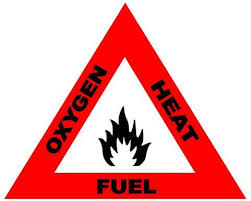
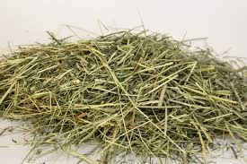
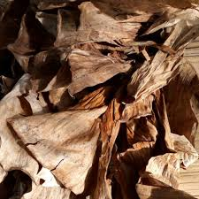
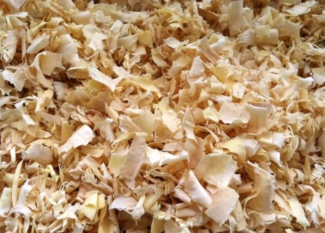
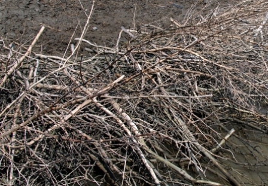
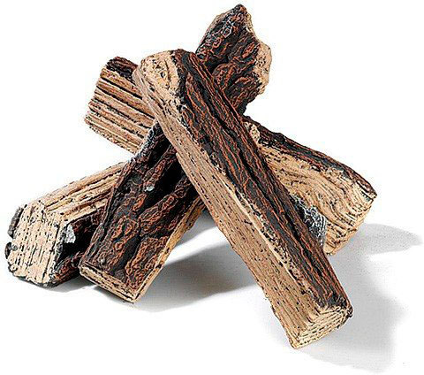

Jungle Survival
API
Bagi pegiat alam bebas kemampuan untuk membuat Api sangatlah diperlukan, dikarenakan dengan api kita dapat amat sangat terbantukan ketika berkegiatan di alam bebas, mulai dari menghangatkan badan, memasak, dan untuk penerangan.
Dalam prakteknya ada 3 unsur yang harus dipenuhi dalam membuat Api.
1. Panas
2. Udara
3. Bahan Bakar

Menyiapkan Bahan
Langkah awal dalam membuat api adalah menyiapkan bahan bakar yang diperlukan, kumpulkan sebanyak-banyaknya bahan bakar beserta cadangannya dan bagi menjadi 3 urutan.
urutan pertama adalah bahan bahan yang mudah terbakar seperti rumput kering, daun kering, dll.
 
setelah api terpicu, gunakan bahan bahan seperti serutan kayu, ranting, dan kulit kayu kering untuk mempertahankan kondisi api.
 
lalu setelah api menyala masukan bahan yang paling besar satu persatu agar api lebih tahan lama.
